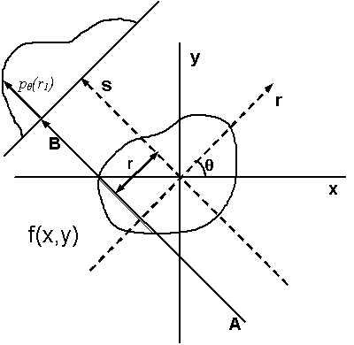

Tomography subpackage (CHAP.tomo)
The tomography subpackage contains the modules that are unique to tomography data processing workflows. This document describes how to run a tomography reconstruction workflow in a Linux terminal.
Tomographic reconstruction
Tomography is a type of 3D imaging that uses some type of penetrative wave (an X-ray beam at CHESS). Tomographic reconstruction refers to the process of recovering 3D spatial information on an object from a set of projected images acquired under different angles after transmission of the beam through the sample.

Illustration of tomographic reconstruction (https://en.wikipedia.org/wiki/Tomographic_reconstruction). The projected image on the detector results from transmission of the beam through the sample at a given angle at varying locations. The intensity at the detector depends on the amount of scattering and absorption in the sample or on, what is often called, its linear attenuation coefficient. Spatial variations in for example density can lead to spatial variations of the local attenuation coefficient. The intensity on the detector is basically a measure of its line integral along a path \(AB\) at a projected sample position \(r\). We can then obtain full 3D reconstruction of the spatial variation from a set of 2D images at varying angles \(\theta\) by a mathematical inversion technique called the inverse Radon transform (https://en.wikipedia.org/wiki/Radon_transform).
The input data
A standard tomographic experiment at CHESS (and other similar institutions) consist of a set of X-ray transmission measurements captured on a 2D area detector. It typically involves two (sets of) measurements without a sample in the beam, one with the beam stop in place (the dark image), and one with the beam stop open (the bright image). Followed by a measurement of a stack of images (a tomographic image series) at varying rotation angle (over 180 or a full 360 degrees of rotation) with the sample in the beam secured to a rotating sample holder. Note that if the sample is larger than the beam cross section, this may require multiple image stacks at various sample positions in the plane perpendicular to the X-ray beam.
Processing the data
A standard tomographic reconstruction in CHAP consists of three steps:
Reducing the data, i.e., correcting the raw detector images for background and non-uniformities in the beam intensity profile using dark and bright fields collected separately from the tomography image series.
Finding the calibrated rotation axis. Accurate reconstruction relies on accurately knowing the center of rotation at each data plane perpendicular to the rotation axis (the sinogram). This rotation axis is calibrated by selecting two data planes, one near the top and one near the bottom of the sample or beam, and visually or automatically picking the optimal center location.
Reconstructing the reduced data for the calibrated rotation axis. For samples taller than the height of the beam, this last step can consist of two parts:
reconstruction of each individual stack of images, and
combining the individual stacks into one 3D reconstructed data set.
Note that combining stacks with a horizontal displacement for samples wider than the width of the beam is not yet implemented.
Running a tomography reconstruction on the CHESS Linux system
Navigate to your work directory.
Create the required
CHAPpipeline file for the workflow (see below) and any additional workflow specific input files. This includes, at a minimum, the detector configuration.yamlfile with the detector configuration. For example, for the andor2 detector (andor2.yaml):prefix: andor2 rows: 2160 columns: 2560 pixel_size: - 0.0065 - 0.0065 lens_magnification: 5.0
Here, the prefix field must equal a detector ID field in the
detectorslist in the pipeline input file. Note that this allows the detector configuration files to be stored at a single convenient location elsewhere on the file system, which may prove convenient or advantageous.Run the workflow using the latest production release version:
$ /nfs/chess/sw/CHESS-software-releases/prod/CHAP_tomo <pipelinefilename>
or the latest development release version:
$ /nfs/chess/sw/CHESS-software-releases/dev/CHAP_tomo <pipelinefilename>
You may find it convenient to add an alias to your
~/.bascrcor~/.bash_aliases, for example for the CHAP Tomography production release:alias CHAP_tomo_prod='/nfs/chess/sw/CHESS-software-releases/prod/CHAP_tomo'
(see: instructions on running
CHAPon the CHESS Linux system)Respond to any prompts that pop up if running interactively.
Running a tomography workflow on any Linux system (requires a local Conda environment and CHAP clone)
Create a base Conda environent and clone the
CHAPrepository according to steps 1 and 2 of the Conda installation instructions.Activate the base Conda environment:
$ source <path_to_CHAP_clone_dir>/bin/activate
Create the Tomo conda environment:
(base) $ mamba env create -f <path_to_CHAP_clone_dir>/CHAP/tomo/environment.yml
Activate the
CHAP_tomoenvironment:(base) $ conda activate CHAP_tomo
Run the workflow using your own
CHAP_tomoconda environment:(CHAP_tomo) $ CHAP <pipelinefilename>
Inspecting output
The output consists of a single NeXus (.nxs) file containing the reconstructed data set and a metadata record that can be processed and saved or uploaded to an external metadata service downstream in the pipeline file. Additionally, optional output figures (.png) may be saved to an output directory specified in the pipeline file.
The optional output figures can be viewed directly by any PNG image viewer. The data in the NeXus output file can be viewed in NeXpy, a high-level python interface to HDF5 files, particularly those stored as NeXus data:
Open the NeXpy GUI by entering in your terminal:
$ /nfs/chess/sw/nexpy/anaconda/envs/nexpy/bin/nexpy &
You may find it convenient to add an alias to your
~/.bascrcor~/.bash_aliases:alias nexus='/nfs/chess/sw/nexpy/anaconda/envs/nexpy/bin/nexpy &'
After the GUI pops up, click File -> Open to navigate to the folder where your output
.nxsfile was saved, and select it.Double click on the base level
NXrootfield in the leftmost “NeXus Data” panel to view the reconstruction. Note that theNXrootname is always the basename of the output file.Or navigate the filetree in the “NeXus Data” panel to inspect any other output or metadata field. Note that the latest data set in any tomography reconstruction workflow is always available under the “data”
NXdatafield among the defaultNXentry’s fields (it is this data set that is opened in the viewer panel when double clicking theNXrootfield). The defaultNXentryname is always the “title” field in the workflow’s map configuration.
An example of a NeXus file data tree for the output of a tomographic reconstruction is included below.
Creating the pipeline file
Create a workflow pipeline.yaml file according to the CHAP pipeline instructions. A generic pipeline input file for a full tomography reconstruction workflow is as follows (note that spaces and indentation are important in .yaml files):
config:
root: . # Change as desired
inputdir: . # Change as desired
# Path can be relative to root (line 2) or absolute
outputdir: output # Change as desired
# Path can be relative to root (line 2) or absolute
interactive: true # Change as desired
log_level: info # Set to debug, info, warning, or error
pipeline:
# Create the map
- common.MapProcessor:
config:
title: <your_BTR> # Change as desired, typically BTR
station: id1a3 # Change as needed
experiment_type: TOMO
sample:
name: <your_sample_name> # Change as desired
# Typically the sample name
spec_scans: # Edit both SPEC log file path and tomography scan numbers
# Path can be relative to inputdir (line 3) or absolute
- spec_file: <your_raw_data_directory>/spec.log
scan_numbers: [3, 4, 5]
independent_dimensions:
- label: rotation_angles
units: degrees
data_type: scan_column
name: theta # Change as needed
- label: x_translation
units: mm
data_type: smb_par
name: ramsx # Change as needed
- label: z_translation
units: mm
data_type: smb_par
name: ramsz # Change as needed
presample_intensity: # Optional, include or remove as needed
# If present, the detector images will be normalized
# with the presample intensity
data_type: scan_column
name: ic1 # Change as needed
detector_config:
detectors:
- id: andor2 # Change as needed
schema: tomofields
- common.SpecReader:
config:
station: id1a3 # Change as needed
experiment_type: TOMO
spec_scans: # Edit both SPEC log file path and tomography scan numbers
# Path can be relative to inputdir (line 3) or absolute
- spec_file: <your_raw_data_directory>/spec.log
scan_numbers: 1
detector_config:
detectors:
- id: andor2 # Change as needed
schema: darkfield
- common.SpecReader:
config:
station: id1a3 # Change as needed
experiment_type: TOMO
spec_scans: # Edit both SPEC log file path and tomography scan numbers
# Path can be relative to inputdir (line 3) or absolute
- spec_file: <your_raw_data_directory>/spec.log
scan_numbers: 2
detector_config:
detectors:
- id: andor2 # Change as needed
schema: brightfield
- common.YAMLReader:
filename: andor2.yaml # Detector config file
# Path can be relative to inputdir (line 3) or absolute
schema: tomo.models.Detector
- tomo.TomoCHESSMapConverter
# Data reduction
- tomo.TomoReduceProcessor:
config: # Optional, remove or change as needed
remove_stripe: # Optional, remove or change as needed
remove_all_stripe: {}
save_figures: true
- common.ImageWriter:
outputdir: figures # Change as desired, unless an absolute path
# this will appear under 'outdutdir' (line 5)
force_overwrite: true # Do not set to false!
# Rename an existing file if you want to prevent
# it from being overwritten
# Find center
- tomo.TomoFindCenterProcessor:
config: # Optional, remove or change as needed
gaussian_sigma: 0.75 # Change as desired
ring_width: 5 # Change as desired
save_figures: true
- common.ImageWriter:
outputdir: figures # Change as desired
force_overwrite: true # Do not set to false!
# Reconstruction
- tomo.TomoReconstructProcessor:
config: # Optional, remove or change as needed
gaussian_sigma: 0.75 # Change as desired
ring_width: 5 # Change as desired
save_figures: true
- tomo.TomoWriter: # Write the reconstructed dataset
# Optional when multiple stacks are combined
filename: reconstructed.nxs # Change as desired
# Will be placed in 'outdutdir' (line 5)
force_overwrite: true
- common.ImageWriter:
outputdir: figures # Change as desired
force_overwrite: true # Do not set to false!
# Combine stacks
- tomo.TomoCombineProcessor:
save_figures: true
- tomo.TomoWriter: # Write the reconstructed and combined dataset
filename: reconstructed.nxs # Change as desired
# Will be placed in 'outdutdir' (line 5)
force_overwrite: true # Do not set to false!
- common.ImageWriter:
outputdir: figures # Change as desired
force_overwrite: true # Do not set to false!
Example
The CHAP tomography subpackage comes with several workflow examples, one of them for an CHESS 1A3 beamline style experiment of a truncated hollow four sided pyramid made from a single homogeneous material.
This example uses simulated raw imaging data that needs to be available in a specific location ahead of the reconstruction. If you are logged in on the CHESS Compute Farm, replace <path_to_CHAP_clone_dir> below with /nfs/chess/sw/CHESS-software-releases/repos/dev/ChessAnalysisPipeline, the path to the CHAP repository administrated by the CHAP developers. If not, replace it with the path to your local CHAP repository. In the later case, you will also need to create the raw data once, since it is not part of the cloned repository. To do so, create a clone and activate your local CHAP_tomo conda environment as instructed above, navigate to your local CHAP repository, and execute:
(CHAP_tomo) $ CHAP examples/tomo/pipeline_id1a3_pyramid_sim.yaml
or use the latest production or development release version as described above.
To perform the reconstruction:
Create a work directory in your own user space.
Within the work directory, create a plain text file, named
pipeline_id1a3_pyramid.yaml, with the following content (note that spaces and indentation are important in.yamlfiles):config: root: . inputdir: <path_to_CHAP_clone_dir>/examples/tomo/config outputdir: reduced/hollow_pyramid interactive: true log_level: info pipeline: # Create the map - common.MapProcessor: config: title: hollow_pyramid station: id1a3 experiment_type: TOMO sample: name: hollow_pyramid spec_scans: - spec_file: ../raw/hollow_pyramid/spec.log scan_numbers: [3, 4, 5] independent_dimensions: - label: rotation_angles units: degrees data_type: scan_column name: theta - label: x_translation units: mm data_type: smb_par name: ramsx - label: z_translation units: mm data_type: smb_par name: ramsz detector_config: detectors: - id: sim schema: tomofields - common.SpecReader: config: station: id1a3 experiment_type: TOMO spec_scans: - spec_file: ../raw/hollow_pyramid/spec.log scan_numbers: 1 detector_config: detectors: - id: sim schema: darkfield - common.SpecReader: config: station: id1a3 experiment_type: TOMO spec_scans: - spec_file: ../raw/hollow_pyramid/spec.log scan_numbers: 2 detector_config: detectors: - id: sim schema: brightfield - common.YAMLReader: filename: detector_pyramid.yaml schema: tomo.models.Detector - tomo.TomoCHESSMapConverter # Data reduction - tomo.TomoReduceProcessor: save_figures: true - common.ImageWriter: outputdir: figures force_overwrite: true # Find center - tomo.TomoFindCenterProcessor: save_figures: true - common.ImageWriter: outputdir: figures force_overwrite: true # Reconstruction - tomo.TomoReconstructProcessor: save_figures: true - common.ImageWriter: outputdir: figures force_overwrite: true # Combine stacks - tomo.TomoCombineProcessor: save_figures: true - tomo.TomoWriter: filename: reconstructed.nxs force_overwrite: true - common.ImageWriter: outputdir: figures force_overwrite: true
Execute
(CHAP_tomo) $ CHAP pipeline_id1a3_pyramid.yaml
or use the latest production or development release version as described above.
Follow the interactive prompts or replace
truewithfalseon line 5 inpipeline_id1a3_pyramid.yaml(interactive: false) and run the workflow non-interactively.Inspect the results:
In NeXpy, as instructed above, navigate to
<your_work_directory>/reduced/hollow_pyramidand openreconstructed.nxsBy displaying the output figures in
<your_work_directory>/reduced/hollow_pyramid/figures
The “config” block defines the CHAP generic configuration parameters:
root: The work directory, defaults to the current directory (whereCHAP <pipelinefilename>is executed). Must be an absolute path or relative to the current directory.inputdir: The default directory for files read by anyCHAPreader (must have read access), defaults toroot. Must be an absolute path or relative toroot.outputdir: The default directory for files written by anyCHAPwriter (must have write access, will be created if not existing), defaults toroot. Must be an absolute path or relative toroot.interactive: Allows for user interactions, defaults tofalse.log_level: The Python logging level.
The “pipeline” block creates the actual workflow pipeline, it this example it consists of ten toplevel processes that get executed successively. The first four processes create and convert the input data to a NeXus style tomography input file:
common.MapProcessor: A processor that creates a CHESS style map.common.SpecReader: A reader that reads a SPEC file, in this case called twice, once to read the dark field and a second time to read the bright field.common.YAMLReader: A reader that reads a yml/yaml file, in this case the file with the detector configuration.tomo.TomoCHESSMapConverter: A processor that converts the inputs from a CHESS style map to aNeXusstyle tomography input file.
The next four processes perform the actual tomographic reconstruction:
tomo.TomoReduceProcessor: A processor that reduces the tomography data, correcting for the dark and bright fields.tomo.TomoFindCenterProcessor: A processor that calibrates the rotation axis.tomo.TomoReconstructProcessor: A processor that reconstructs the tomography data.tomo.TomoCombineProcessor: A processor that combines the three image stacks into a single 3D reconstructed image. It creates a singleNeXusobject with the reconstructed data as well as all metadata pertaining to the reconstruction and passes it on to the next item in the pipeline.
The final two processes write the output to file:
common.TomosWriter: A writer that writes the reconstructed data to a NeXus file.common.ImageWriter: A writer that writes any output figures created bytomo.TomoCombineProcessor(or similarly by the other prodessors in the pipeline) to a directoryfiguresunderneath the workflow output directory.
Inspecting the example output
Open the reconstructed data file in NeXpy as instructed above, navigate to <your_work_directory>/reduced/hollow_pyramid and open reconstructed.nxs. After the NeXpy GUI opens, the left panel will show the NeXus data tree. You can click on the black sideways pointing triangles to expand each level of the tree. The hollow pyramid example after full reconstruction as described above will look like:
recontructed # Base name of the NeXus output file
└── hollow_pyramid # Map title
├── bright_field_config # Bright field configuration
├── combined_data # (meta)data from the tomo.TomoCombineProcessor processor
│ ├── data
│ │ ├── combined_data
│ │ ├── x
│ │ ├── y
│ │ └── z
│ └── date
├── dark_field_config # Bright field configuration
├── data # Default NeXus NXdata object
│ ├── combined_data -> /hollow_pyramid/combined_data/data/combined_data\n'
│ ├── x -> /hollow_pyramid/combined_data/data/x\n'
│ ├── y -> /hollow_pyramid/combined_data/data/y\n'
│ └── z -> /hollow_pyramid/combined_data/data/z\n'
├── definition # NeXus format style definition (NXtomo)
├── detector_config # Detector configuration
├── instrument # Instrument configuration
│ ├── detector
│ │ ├── column_pixel_size
│ │ ├── columns
│ │ ├── local_name
│ │ ├── row_pixel_size
│ │ └── rows
│ └── source
│ │ ├── name
│ │ ├── probe
│ │ └── type
├── map_config # Map configuration
├── reconstructed_data # (meta)data from the tomo.TomoCombineProcessor processor
│ ├── center_offsets
│ ├── center_rows
│ ├── center_stack_index
│ ├── date
│ ├── x_bounds
│ └── y_bounds
├── reduced_data # (meta)data from the tomo.TomoCombineProcessor processor
│ ├── date
│ ├── img_row_bounds
│ ├── rotation_angle
│ ├── x_translation
│ └── z_translation
└── sample # Sample information
├── description
└── name
Double clicking on a dataset will open a graphical display in the main panel. Double clicking on a NeXus NXdata object, like recontructed/hollow_pyramid/data, or any field with a default path pointing to an NeXus NXdata object, like recontructed/hollow_pyramid will also open the default dataset in the main panel. Any other data field can be viewed by clicking on the name or by right-clicking it and selecting to view the item.